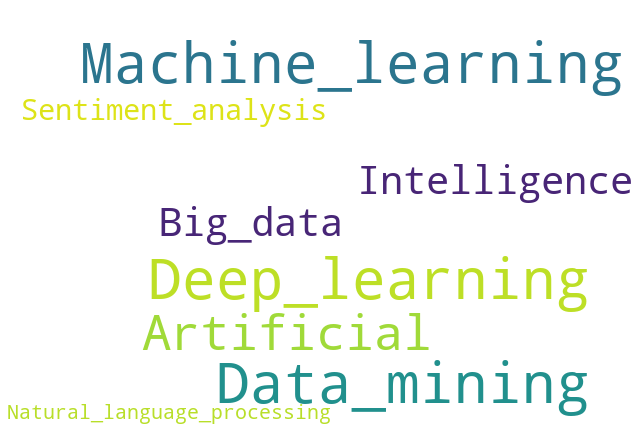

News
2020/04/20: Fangwen's paper is accepted by IJCAI'20, congratulations
2020/04/20: Wenfang's paper is accepted by IJCAI'20, congratulations
2020/03/21: Wenfang's paper is accepted by IJCNN'20
2020/03/20: Tingting, Saisai and Wenzhou passed their thesis defences for Master's degree, congratulations
2020/03/19: 1 paper is accepted by International Journal of Approximate Reasoning
2020/02/28: 1 paper is accepted by International Journal of Machine Learning and Cybernetics
2020/02/15: 2 papers are accepted by Knowledge-Based Systems
2019/09/15: 1 paper is accepted by IEEE TKDE
2019/08/27: Welcome 4 master students and 1 phd student to IDAM group
2019/07/27: 1 paper is accepted by International Journal of Approximate Reasoning
2019/06/10: 1 paper is accepted by Pattern Recognition Letters
2019/06/08: 1 paper is accepted by Information Sciences
2019/05/10: 2 papers are accepted by IJCAI'19
2019/02/25: 1 paper is accepted by CVPR'19
2020/04/20: Wenfang's paper is accepted by IJCAI'20, congratulations
2020/03/21: Wenfang's paper is accepted by IJCNN'20
2020/03/20: Tingting, Saisai and Wenzhou passed their thesis defences for Master's degree, congratulations
2020/03/19: 1 paper is accepted by International Journal of Approximate Reasoning
2020/02/28: 1 paper is accepted by International Journal of Machine Learning and Cybernetics
2020/02/15: 2 papers are accepted by Knowledge-Based Systems
2019/09/15: 1 paper is accepted by IEEE TKDE
2019/08/27: Welcome 4 master students and 1 phd student to IDAM group
2019/07/27: 1 paper is accepted by International Journal of Approximate Reasoning
2019/06/10: 1 paper is accepted by Pattern Recognition Letters
2019/06/08: 1 paper is accepted by Information Sciences
2019/05/10: 2 papers are accepted by IJCAI'19
2019/02/25: 1 paper is accepted by CVPR'19
Research Interests
- Label distribution learning / Multi-label learning
- Three-way decisions / Granular computing
- Sentiment analysis / Facial emotion recognition
Publications
Conference Paper (* indicate master student, # indicate phd student)
- Wenfang Zhu*, Weiwei Li, Xiuyi Jia. Multi-label learning with local similarity of samples. IJCNN 2020.
- Tingting Ren*, Xiuyi Jia, Weiwei Li, Lei Chen, Zechao Li. Label distribution learning with label-specific features. IJCAI 2019. CODE BIB
- Tingting Ren*, Xiuyi Jia, Weiwei Li, Shu Zhao. Label distribution learning with label correlations via low-rank approximation. IJCAI 2019. CODE BIB
- Xiuyi Jia, Xiang Zheng, Weiwei Li, Changqing Zhang, Zechao Li. Facial emotion distribution learning by exploiting low-rank label correlations locally. CVPR 2019. CODE BIB
- Wenzhou Zhang*, Weiwei Li, Xiuyi Jia. Effort-aware tri-training for semi-supervised just-in-time defect prediction. PAKDD 2019. CODE BIB
- Tongjun Li, Weizhi Wu, Xiuyi Jia. Rough approximations on two universes under a mapping. IJCRS 2019.
- Hong Chen, Huaxiong Li, Bing Huang, Xiuyi Jia, Xianzhong Zhou. Incremental sequential three-way decision using a deep stacked autoencoder. IJCRS 2019.
- Xiuyi Jia, Weiwei Li, Junyu Liu, Yu Zhang. Label distribution learning by exploiting label correlations. AAAI 2018. CODE BIB
- Xiang Zheng*, Xiuyi Jia, Weiwei Li. Label distribution learning by exploiting sample correlations locally. AAAI 2018. CODE BIB
- Jiubing Liu, Xianzhong Zhou, Huaxiong Li, Bing Huang, Libo Zhang, Xiuyi Jia. An optimization view on intuitionistic fuzzy three-way decisions. IJCRS2018.
- Xiuyi Jia, Han Zhang, Ehsan Adeli, Dinggang Shen. Consciousness level and recovery outcome prediction using high-order brain functional connectivity network. CNI@MICCAI 2017.
- Li Shi*, Changdong Zhang, Tingting Liu, Wenhe Liao, Xiuyi Jia. Adaptive density optimization of lattice structures sustaining the external multi-load. ICIG 2017.
- Lu Wang*, Weiwei Li, Xiuyi Jia, Bing Zhou. A multi-objective attribute reduction method in decision-theoretic rough set model. KSEM 2017.
- Xiuyi Jia, Huaxiong Li, Lin Shang. Minimum cost attribute reduction in three-way decisions based bayesian network. ICMLC 2016.
- Guojian Deng*, Xiuyi Jia. A decision-theoretic rough set approach to multi-class cost-sensitive classification. IJCRS 2016.
- Junxin Tan, Mengting Xu, Lin Shang, Xiuyi Jia. Sentiment analysis for images on microblogging by integrating textual information with multiple kernel learning. PRICAI 2016.
- Mengting Xu, Min Guo, Lin Shang, Xiuyi Jia. Multi-value image segmentation based on FCM algorithm and graph cut theory. IEEE-FUZZ 2016.
- Yimeng Zhang#, Xiuyi Jia, Zhenmin Tang. Minimum cost attribtue reduction in incomplete system under decision-theoretic rough set model. ICNC-FSKD 2016.
- Yannan Gu*, Xiuyi Jia, Lin Shang. Three-way decisioins based bayesian network. PIC 2015.
- Weibin Zhao, Menting Xu, Xiuyi Jia, Lin Shang. A classification method for imbalanced data based on SMOTE and fuzzy rough nearest neighbor algorithm. RSFDGrC 2015.
- Xiuyi Jia, Lin Shang. How to evaluate three-way decisions based binary classification? RSFDGrC 2015.
- Hong Yu, Guoyin Wang, Baoqing Hu, Xiuyi Jia, Huaxiong Li, Tianrui Li, et al. Methods and practices of three-way decisions for complex problem solving. RSKT 2015.
- Yaowen Zhang, Lin Shang, Xiuyi Jia. Sentiment analysis on microblogging by integrating text and image features. PAKDD 2015.
- Youli Liu, Lei Pan, Xiuyi Jia, Chongjun Wang, Junyuan Xie. Three-way decision based overlaping community detection. RSKT 2013.
- Weiwei Li, Zhiqiu Huang, Xiuyi Jia. Two-phase classification based on three-way decisions. RSKT 2013.
- Xiuyi Jia, Kan Zheng, Weiwei Li, Tingting Liu, Lin Shang. Three-way decisions solution to filter spam email: an empirical study. RSCTC 2012.
- Xiuyi Jia, Weiwei Li, Lin Shang, Jiajun Chen. An optimization viewpoint on decision theoretic rough set model. RSKT 2011.
- Aibao Luo, Xiuyi Jia, Lin Shang, Yang Gao, Yubin Yang. Granular-based partial periodic pattern discovery over time series data. RSKT 2011.
- Xiuyi Jia, Yabing Zhang, Jiajun Chen, Lin Shang. Rough set approach to coreference resolution. CNCCL 2011.
Journal Articles
- Sichun Yang, Yunan Lu, Xiuyi Jia, Weiwei Li. Constructing three-way concept lattice based on the composite of classical lattices. International Journal of Approximate Reasoning. 2020.
- Di Dai, Huaxiong Li, Xiuyi Jia, Xianzhong Zhou, Bing Huang, Sunning Liang. A co-training approach for sequential three-way decisions. International Journal of Machine Learning and Cybernetics. 2020.
- Qinghai Zheng, Jihua Zhu, Zhiqiang Tian, Zhongyu Li, Shanmin Pang, Xiuyi Jia. Constrained bilinear factorization multi-view subspace clustering. Knowledge-Based Systems. 2020.
- Xiuyi Jia, Zechao Li, Xiang Zheng, Weiwei Li, Sheng-Jun Huang. Label distribution learning with label correlations on local samples. IEEE Transactions on Knowledge and Data Engineering. 2020. CODE BIB
- Xiuyi Jia, Ya Rao, Lin Shang, Tongjun Li. Similarity-based attribute reduction in rough set theory: A clustering perspective. International Journal of Machine Learning and Cybernetics. 2020.
- Xiuyi Jia, Saisai Zhu, Weiwei Li. Joint label-specific features and correlation information for multi-label learning. Journal of Computer Science and Technology. 2020.
- Min Wang, Ke Fu, Fan Min, Xiuyi Jia. Active learning through label error statistical methods. Knowledge-Based Systems. 2020.
- Xiuyi Jia, Tingting Ren, Lei Chen, Jun Wang, Jihua Zhu. Weakly supervised label distribution learning based on transductive matrix completion with sample correlations. Pattern Recognition Letters. 2019.CODE BIB
- Xiuyi Jia, Zhao Deng, Fan Min, Dun Liu. Three-way decisions based feature fusion for Chinese irony detection. International Journal of Approximate Reasoning. 2019.
- Yimeng Zhang#, Xiuyi Jia, Zhenmin Tang, Xianzhong Long. Uncertainty measures for interval set information tables based on interval δ-similarity relation. Information Sciences. 2019.
- Xiuyi Jia, Weiwei Li, Lin Shang. A multiphase cost-sensitive learning method based on the multiclass three-way decision-theoretic rough set model. Information Sciences, 2019.
- Weiwei Li, Xiuyi Jia, Lu Wang, Bing Zhou. Multi-objective attribute reduction in three-way decision-theoretic rough set model. International Journal of Approximate Reasoning, 2019.
- Weiwei Li, Zhiqiu Huang, Xiuyi Jia, Xinye Cai. Neighborhood based decision-theoretic rough set models. International Journal of Approximate Reasoning, 2016.
- Xiuyi Jia, Lin Shang, Bing Zhou, Yiyu Yao. Generalized attribute reduct in rough set theory. Knowledge-Based Systems, 2016.
- Xiuyi Jia, Zhenmin Tang, Wenhe Liao, Lin Shang. On an optimization representation of decision-theoretic rough set models, International Journal of Approximate Reasoning, 2014.
- Xiuyi Jia, Lin Shang. Three-way decisions versus two-way decisions on filtering spam email. LNCS Transactions on Rough Sets XVIII, 2014.
- Xiuyi Jia, Wenhe Liao, Zhenmin Tang, Lin Shang. Minimum cost attribute reduction in decision-theoretic rough set models. Information Sciences, 2013.
- Liang Gao, Lin Shang, Yang Gao, Yubin Yang, Xiuyi Jia. Video behavior analysis using topic models and rough sets. IEEE Computational Intelligence Magazine, 2013.
- Xiuyi Jia, Lin Shang, Jiajun Chen, Xinyu Dai. Incremental versus non-incremental data and algorithms based on ordering relations. International Journal of Computational Intelligent Systems, 2011.